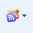

Thank you...
... for installing (or updating to) the latest version of Reader Plus!
Make sure you check the preferences page for configuration of the extension.
Visit the Google Chrome Extensions gallery page!

|
What's new!!
- Themes : Support for new Google UI
- New Metro Theme
- Stars : supertars like gmail labs
- Filter : the completly rewritten version
- Read by mouse UI revamped
- Address bar menu from icon has signin/signout
- New clean, integrated and powerful filter
- Share with radbox, identi.ca, addthis, blogger, pinboard, tumblr
- Portal theme v2 - read as a newspaper
- Actions icons : to keep only icons for actions on feed
- "Remove ads" slow fix
- Replacer: No more auto save in cloud
- Bugfixes
And still ...
- A lot of themes
- Sync settings in your Google Docs (1 profile for multiple computers)
- Toggle theme shortcut (Alt X)
- Spanish and romanian supported now
- Cloud experience : Use shared configuration for favicons and replacer
- Toolbar button shows now a popup with last unread items and a fast tooltip preview
- or use a custom background with the new theme 'MyTheme'
- or use a random iGoogle theme
- Preview as lightbox
- Share items using ReadItLater
- Entry actions as floating window (general)
- Translate news
|
|
If you like this extension and want more features, feel free to make a donation.
In this way, I could buy a truck of coffee so that i can stay awake to write all the code :)

|
Changelog
Version 3.7.3 - 08/25/2011
- Fixes:
- * Theme minimalistic failure
Version 3.7.2 - 08/24/2011
- Enhancements:
- * "Add top/bottom links" has option for static 'go down' icon.
- * 'hide toolbar' false as default
- New themes from userstyles:
- * Helvetireader 2 Dark
- * Segoe UI/Lucida Grande Reskinned
- * Perfect Dark
- Fixes:
- * Default shortcut for Diigo and Google Bookmarks
- * #489: read by mouse showed last scroller
- * Add a warning alert on Postrank feature (deprecated API because of purchase by G)
- * DarkHelvetireader star
- * Rank status stored
|